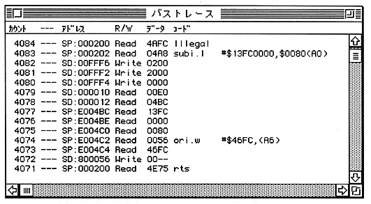

The following example sets a software break at $ 200. Pass count has not been reached It continues without stopping user execution.

In this example, 4084 to 4072 are extra recorded debugger actions. Between 4072 and 4071, the debugger code is running but not recorded. Also, because there is an instruction prefetch that was not executed in 4083, disassembly from 4077 The display has shifted.
For example, if the working directory is Macintosh HD: Development: SSBug Folder, the command “r main.s28” means “download the file Macintosh HD: Development: SSBug Folder: main.s28”.
Note that SSBug handles only the data fork of the file, and all files handled including binary data are 'TEXT'.
PWD
Description Displays the current working directory name.
● SSBug remembers the working directory when it was last terminated and is automatically set at startup To do.